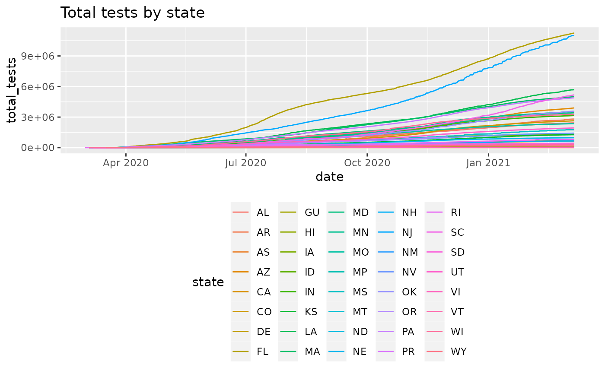
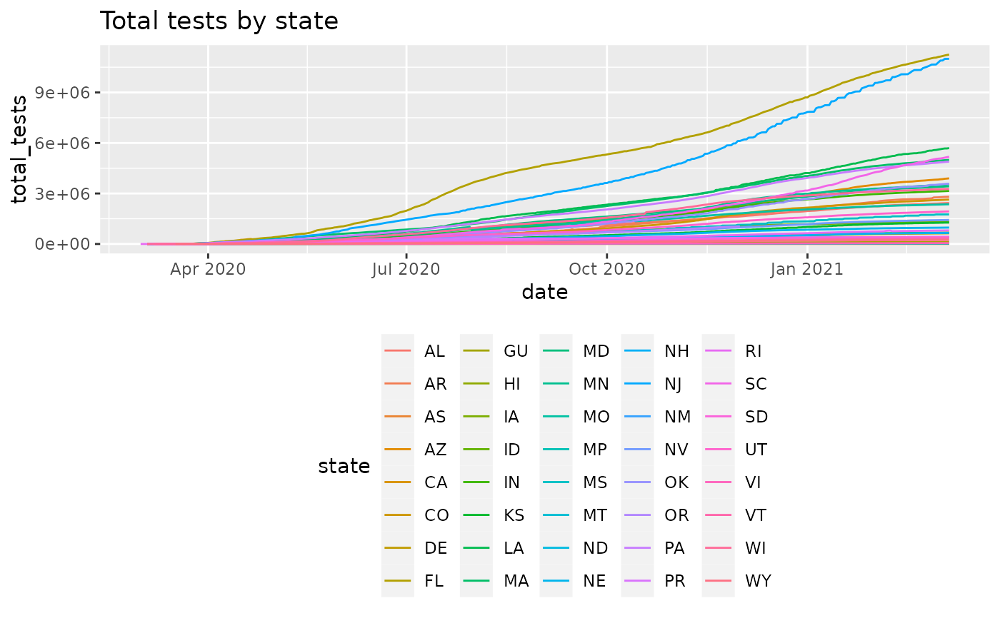

plot_epicurve is a simplifying wrapper around ggplot to
produce curves of cumulative cases versus time. The input
data frame should contain at least:
plot_epicurve(
df,
filter_expression,
date_column = "date",
case_column = "count",
...,
log = TRUE
)Arguments
- df
a data frame with columns that include at least a date column and an integer count column
- filter_expression
an expression that is passed directly to
dplyr::filter(). This parameter is a convenience feature since the filtering could also be done easily outside this function.- date_column
character(1) the column name of the
datetype column- case_column
character(1) the column name of the
count of casescolumn- ...
passed to
ggplot2::aes_string(), useful providing colors or line types to separate out datasets.- log
logical(1) TRUE for log10 based y-scale, FALSE for linear
Value
a ggplot2 object
Details
a date column (or any data type that has a natural time order); this will become the x-axis
a cumulative
countcolumn; this will become the y-axis
An additional common use case is to provide a grouping variable
in the data.frame; specifying color=... will draw group-specific
curves on the same plot. See examples.
See also
Other plotting:
align_to_baseline()
Other case-tracking:
align_to_baseline(),
beoutbreakprepared_data(),
bulk_estimate_Rt(),
combined_us_cases_data(),
coronadatascraper_data(),
covidtracker_data(),
ecdc_data(),
estimate_Rt(),
jhu_data(),
nytimes_county_data(),
owid_data(),
test_and_trace_data(),
usa_facts_data(),
who_cases()
Examples
library(dplyr)
jhu = jhu_data() %>%
filter(CountryRegion=='China' & subset=='confirmed') %>%
group_by(CountryRegion,date) %>% summarize(count=sum(count))
#> `summarise()` has grouped output by 'CountryRegion'. You can override using the `.groups` argument.
head(jhu)
#> # A tibble: 6 × 3
#> # Groups: CountryRegion [1]
#> CountryRegion date count
#> <chr> <date> <dbl>
#> 1 China 2020-01-22 548
#> 2 China 2020-01-23 643
#> 3 China 2020-01-24 920
#> 4 China 2020-01-25 1406
#> 5 China 2020-01-26 2075
#> 6 China 2020-01-27 2877
jhu %>% plot_epicurve(log=FALSE)
 # add a title
library(ggplot2)
jhu %>% plot_epicurve() + ggtitle('Cumulative cases for China')
# add a title
library(ggplot2)
jhu %>% plot_epicurve() + ggtitle('Cumulative cases for China')
 # Work with testing data
cc = covidtracker_data() %>%
dplyr::mutate(total_tests = positive+negative) %>%
dplyr::filter(total_tests>0)
#> Warning: One or more parsing issues, see `problems()` for details
head(cc)
#> # A tibble: 6 × 17
#> date fips state positive negative death pending hospitalized
#> <date> <chr> <chr> <int> <int> <int> <int> <int>
#> 1 2021-03-07 00001 AL 499819 1931711 10148 NA 45976
#> 2 2021-03-07 00005 AR 324818 2480716 5319 NA 14926
#> 3 2021-03-07 00060 AS 0 2140 0 NA NA
#> 4 2021-03-07 00004 AZ 826454 3073010 16328 NA 57907
#> 5 2021-03-07 00008 CO 436602 2199458 5989 NA 23904
#> 6 2021-03-07 00010 DE 88354 545070 1473 NA NA
#> # … with 9 more variables: hospitalizedCurrently <int>, recovered <int>,
#> # inIcuCumulative <int>, inIcuCurrently <int>, onVentilatorCurrently <int>,
#> # onVentilatorCumulative <int>, dateChecked <dttm>, dataQualityGrade <lgl>,
#> # total_tests <int>
plot_epicurve(cc, case_column='total_tests', color='state', log=FALSE) +
ggtitle('Total tests by state') +
ggplot2::theme(legend.position='bottom')

# get tests per 100k population
# use the tidycensus package to get
# population data
if(require(tidycensus)) {
pop = tidycensus::get_estimates(geography='state',product='population') %>%
dplyr::filter(variable=='POP')
head(pop)
# fix GEOID column to be 5-digit fips
pop$GEOID=integer_to_fips(as.integer(pop$GEOID))
cc_pop = merge(cc,pop, by.x='fips', by.y='GEOID', all.x=FALSE, all.y=FALSE)
cc_pop = cc_pop %>% mutate(tests_per_100k = total_tests/value * 100000)
plot_epicurve(cc_pop, case_column='tests_per_100k', color='state', log=FALSE) +
ggtitle('Total tests per 100,000 people') +
ggplot2::theme(legend.position='bottom')
}
#> Loading required package: tidycensus
# Work with testing data
cc = covidtracker_data() %>%
dplyr::mutate(total_tests = positive+negative) %>%
dplyr::filter(total_tests>0)
#> Warning: One or more parsing issues, see `problems()` for details
head(cc)
#> # A tibble: 6 × 17
#> date fips state positive negative death pending hospitalized
#> <date> <chr> <chr> <int> <int> <int> <int> <int>
#> 1 2021-03-07 00001 AL 499819 1931711 10148 NA 45976
#> 2 2021-03-07 00005 AR 324818 2480716 5319 NA 14926
#> 3 2021-03-07 00060 AS 0 2140 0 NA NA
#> 4 2021-03-07 00004 AZ 826454 3073010 16328 NA 57907
#> 5 2021-03-07 00008 CO 436602 2199458 5989 NA 23904
#> 6 2021-03-07 00010 DE 88354 545070 1473 NA NA
#> # … with 9 more variables: hospitalizedCurrently <int>, recovered <int>,
#> # inIcuCumulative <int>, inIcuCurrently <int>, onVentilatorCurrently <int>,
#> # onVentilatorCumulative <int>, dateChecked <dttm>, dataQualityGrade <lgl>,
#> # total_tests <int>
plot_epicurve(cc, case_column='total_tests', color='state', log=FALSE) +
ggtitle('Total tests by state') +
ggplot2::theme(legend.position='bottom')

# get tests per 100k population
# use the tidycensus package to get
# population data
if(require(tidycensus)) {
pop = tidycensus::get_estimates(geography='state',product='population') %>%
dplyr::filter(variable=='POP')
head(pop)
# fix GEOID column to be 5-digit fips
pop$GEOID=integer_to_fips(as.integer(pop$GEOID))
cc_pop = merge(cc,pop, by.x='fips', by.y='GEOID', all.x=FALSE, all.y=FALSE)
cc_pop = cc_pop %>% mutate(tests_per_100k = total_tests/value * 100000)
plot_epicurve(cc_pop, case_column='tests_per_100k', color='state', log=FALSE) +
ggtitle('Total tests per 100,000 people') +
ggplot2::theme(legend.position='bottom')
}
#> Loading required package: tidycensus